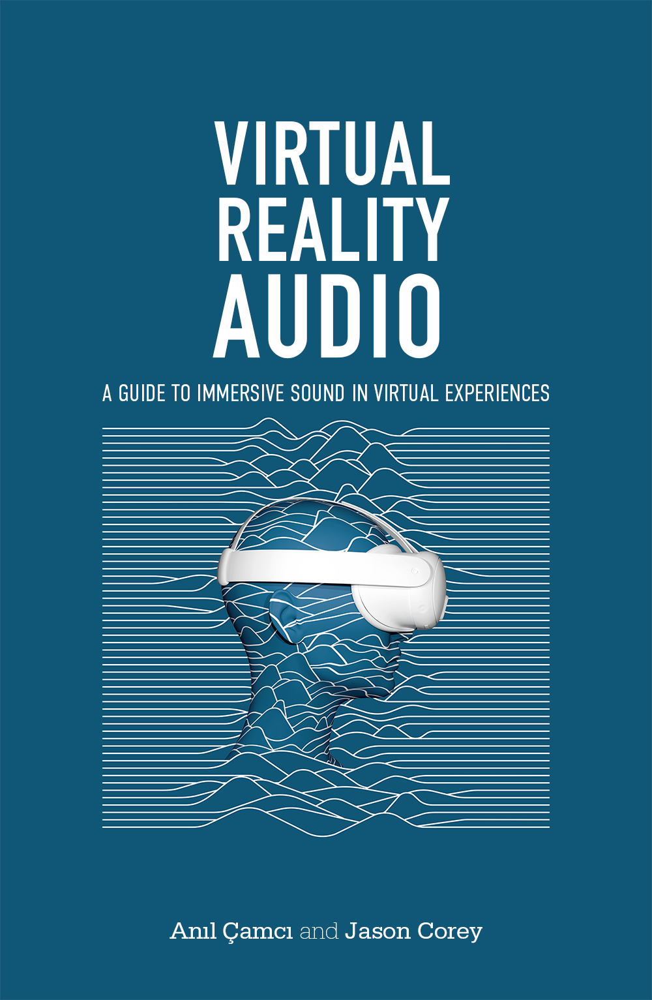

Welcome to the companion website for Virtual Reality Audio. Here, you will find downloadable examples and projects that accompany selected chapters of the book. We will update these examples as their software platforms are updated with new features or bug fixes. We will also add new examples that demonstrate other concepts and techniques from the book, as well as new developments in the field of VR audio. If you encounter any issues with downloading these materials, please let us know at info@vraudio.org.
Jump to downloadable materials by chapter:
This Inviso project includes a virtual auditory scene with two sounds: one that circles around the user and another one that moves up and down. The head model in the middle represents the vantage point from which we hear this scene. The HRTFs used to spatialize the sound are generic so you are likely to experience errors in sound source localization such as front-back or up-down confusions.
↓ DownloadIn this case study, we offer the production materials for a VR concert featuring the University of Michigan's Percussion Ensemble. The materials include a 3D 360° video file, first-order and second-order Ambisonic recordings, spot and binaural microphone recordings, as well as the Reaper project file.
↓ DownloadThis Inviso project showcases various features of the platform, such as omnidirectional, unidirectional, and nondirectional sound sources, as well as motion trajectories. The listener node is also set up on a motion trajectory, but you may delete this automation and move the listener with your mouse or the W, A, S, and D keys on your keyboards to move it up, left, down, and right respectively. Experiment with different parameter configurations to see how to sound environment changes. You may also load your files or create new sound spheres, cones, or zones.
↓ DownloadIn this Inviso project, you will find two omnidirectional sound sources represented as spheres in the scene. One of the objects, as well as the listener node, move on predetermines movement trajectories. Pay attention to the relationship between the objects and the listener in terms of distance, orientation, and movement, paying attention to how the sound react to changes in these.
↓ DownloadThis Inviso project has a layout similar to that of the Omnidirectional example, but with the omni sources replaced with cones. Pay attention to how the limited directivity of the sound sources affect their propagation in the scene. Modify the placement of the cones either with mouse interactions in the "Zoom In" view or by changing the longitude and latitude parameters of the cone in the parameter window.
↓ DownloadThis Inviso project introduces sound zones that are heard without localization cues ones the listner node enters them. These are meant to establish ambient sound sources that are heard monophonically. Multiple zones can be overlapped to create complex ambiences. In this example, a listener node on a trajector crosse over two zones. Play with the placement, scale, and rotation of these zones to modify the sound environment.
↓ DownloadIn the example, we demonstrate the motion parallax effect with two sound sources that move around the listener at the same speed but at different distnaces. You will hear two speech samples used as moving sound sources. Compare the perceived speed of movement of these two sound sources. Does one of them feel faster than the other? You may also change their movement speed and see how that affects the perceived sense of auditory movement.
↓ DownloadIn this case study, we present a VR game built in Unity. Named "The Fountain," this game features fully procedural audio with libPd and spatialization with Steam Audio. The project materials include the Unity project, and all the associated audio and visual assets.
↓ DownloadIn this case study, we present a VR game built in Unreal. Named "Proximal," this game features fully procedural audio with MetaSounds and spatialization using built-in features of the Unreal Engine. The project materials include the Unreal project, and all the associated audio and visual assets.
↓ Download